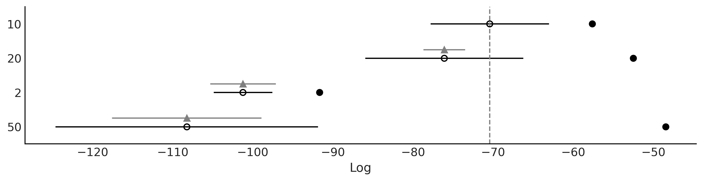
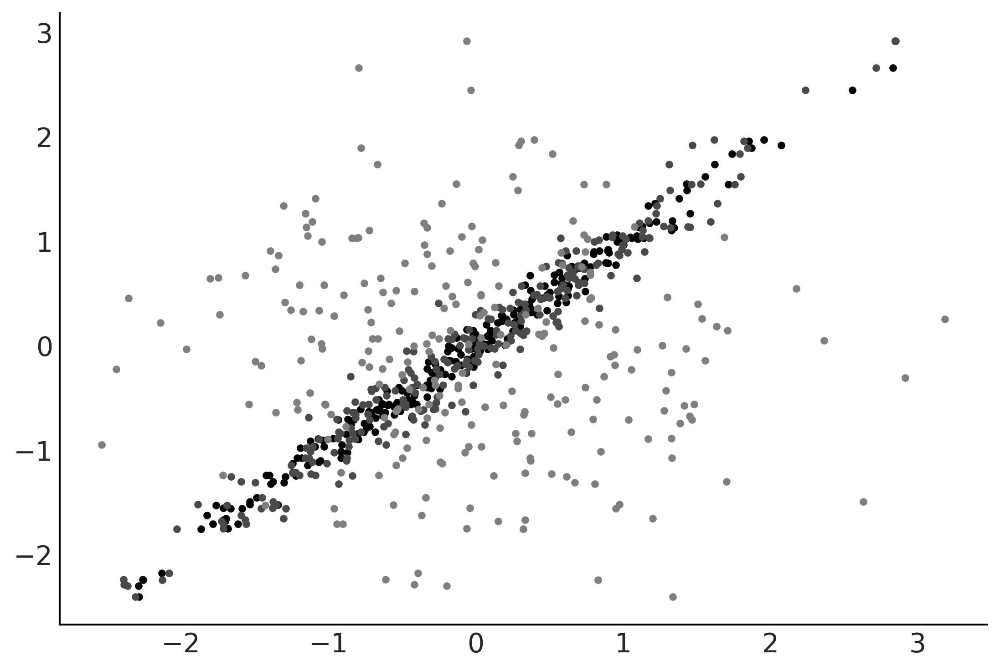
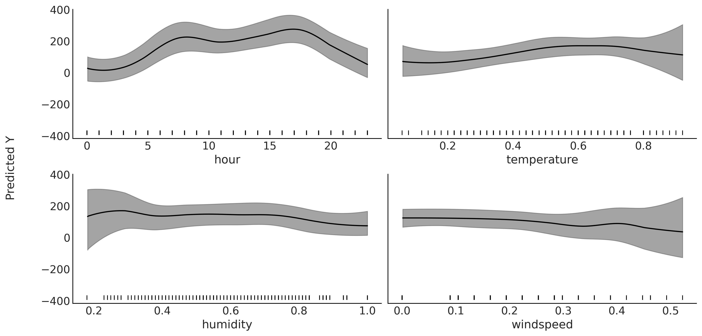
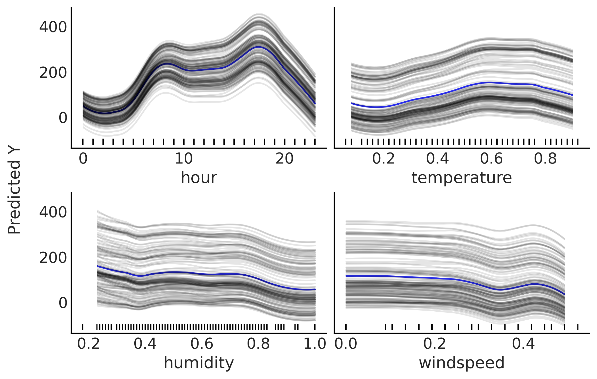
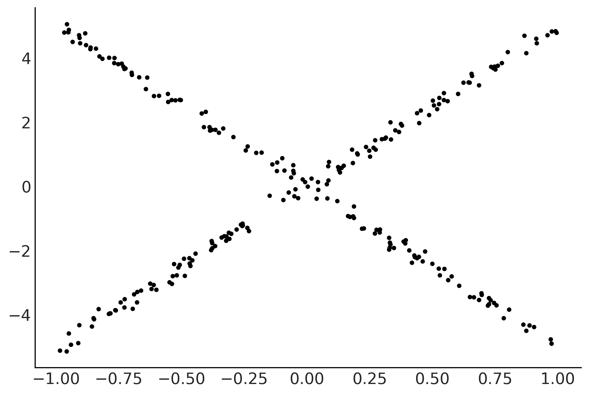
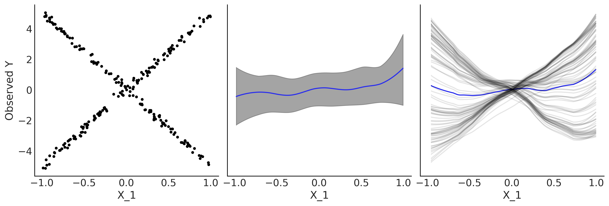
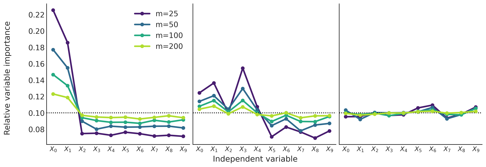
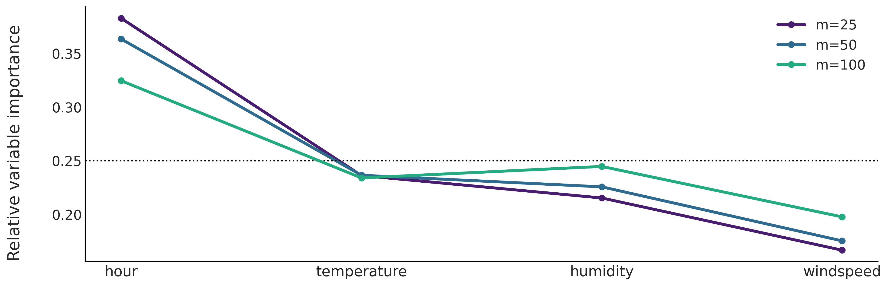

Code 7: Bayesian Additive Regression Trees
Contents
Code 7: Bayesian Additive Regression Trees¶
This is a reference notebook for the book Bayesian Modeling and Computation in Python
The textbook is not needed to use or run this code, though the context and explanation is missing from this notebook.
If you’d like a copy it’s available from the CRC Press or from Amazon. ``
%matplotlib inline
import pymc3 as pm
import pandas as pd
import numpy as np
import matplotlib.pyplot as plt
from cycler import cycler
import arviz as az
from scipy.special import expit
from scripts.pdp import plot_pdp
az.style.use('arviz-grayscale')
plt.rcParams["figure.dpi"] = 300
np.random.seed(5453)
viridish = [(0.2823529411764706, 0.11372549019607843, 0.43529411764705883, 1.0),
(0.1843137254901961, 0.4196078431372549, 0.5568627450980392, 1.0),
(0.1450980392156863, 0.6705882352941176, 0.5098039215686274, 1.0),
(0.6901960784313725, 0.8666666666666667, 0.1843137254901961, 1.0)]
BART Bikes¶
data = pd.read_csv("../data/bikes_hour.csv")
data = data[::50]
data.sort_values(by='hour', inplace=True)
data.hour.values.astype(float)
X = np.atleast_2d(data["hour"]).T
Y = data["count"]
Code 7.1¶
with pm.Model() as bart_g:
σ = pm.HalfNormal('σ', Y.std())
μ = pm.BART('μ', X, Y, m=50)
y = pm.Normal('y', μ, σ, observed=Y)
idata_bart_g = pm.sample(2000, chains=1, return_inferencedata=True)
The BART model is experimental. Use with caution.
Sequential sampling (1 chains in 1 job)
CompoundStep
>NUTS: [σ]
>PGBART: [μ]
100.00% [3000/3000 00:34<00:00 Sampling chain 0, 0 divergences]
Sampling 1 chain for 1_000 tune and 2_000 draw iterations (1_000 + 2_000 draws total) took 34 seconds.
Only one chain was sampled, this makes it impossible to run some convergence checks
Figure 7.4¶
_, ax = plt.subplots(2, 1, figsize=(10, 6), sharex=True)
ax[0].set_prop_cycle(cycler('color', viridish))
ax[1].set_prop_cycle(cycler('color', viridish))
for i in range(3):
ax[0].plot(X, μ.distribution.all_trees[i*10][i*2].predict_output(), "o-", lw=1)
posterior = idata_bart_g.posterior.stack(samples=("chain", "draw"))
for i in range(3):
ax[1].plot(X, posterior["μ"].sel(draw=i*50), "o-", lw=1)
ax[1].plot(X, Y, "C2.", zorder=-1)
ax[0].set_ylabel("count")
ax[0].set_title("Individual trees")
ax[1].set_title("Sum of trees")
ax[1].set_xlabel("hour")
ax[1].set_ylabel("count")
plt.savefig('img/chp07/BART_bikes_samples.png')

Code 7.5¶
_, ax = plt.subplots(1, 1, figsize=(12, 4))
ax.plot(X, Y, "o", alpha=0.3, zorder=-1)
ax.plot(X, posterior["μ"].mean("samples"), color="C4", lw=2)
az.plot_hdi(X[:,0], posterior["μ"].T, smooth=False)
ax.set_xlabel("hour")
ax.set_ylabel("count")
plt.savefig('img/chp07/BART_bikes.png')
/u/32/martino5/unix/anaconda3/envs/pymcv3/lib/python3.9/site-packages/arviz/stats/stats.py:456: FutureWarning: hdi currently interprets 2d data as (draw, shape) but this will change in a future release to (chain, draw) for coherence with other functions
warnings.warn(
space_in = pd.read_csv("../data/space_influenza.csv")
X = np.atleast_2d(space_in["age"]).T
Y = space_in["sick"]
Y_jittered = np.random.normal(Y, 0.02)
plt.plot(X[:,0], Y_jittered, ".", alpha=0.5)
[<matplotlib.lines.Line2D at 0x7efc063398b0>]
Generalized BART Models¶
Code 7.2 and Figures 7.6 and 7.7¶
traces = []
ntrees = [2, 10, 20, 50]
for ntree in ntrees:
with pm.Model() as bart_b:
μ = pm.BART('μ', X, Y, m=ntree,
inv_link="logistic",
)
y = pm.Bernoulli('y', μ, observed=Y)
idata_bart_b = pm.sample(2000, return_inferencedata=True)
traces.append(idata_bart_b)
The BART model is experimental. Use with caution.
Multiprocess sampling (4 chains in 4 jobs)
PGBART: [μ]
100.00% [12000/12000 00:07<00:00 Sampling 4 chains, 0 divergences]
Sampling 4 chains for 1_000 tune and 2_000 draw iterations (4_000 + 8_000 draws total) took 7 seconds.
The BART model is experimental. Use with caution.
Multiprocess sampling (4 chains in 4 jobs)
PGBART: [μ]
100.00% [12000/12000 00:08<00:00 Sampling 4 chains, 0 divergences]
Sampling 4 chains for 1_000 tune and 2_000 draw iterations (4_000 + 8_000 draws total) took 9 seconds.
The number of effective samples is smaller than 10% for some parameters.
The BART model is experimental. Use with caution.
Multiprocess sampling (4 chains in 4 jobs)
PGBART: [μ]
100.00% [12000/12000 00:18<00:00 Sampling 4 chains, 0 divergences]
Sampling 4 chains for 1_000 tune and 2_000 draw iterations (4_000 + 8_000 draws total) took 19 seconds.
The number of effective samples is smaller than 10% for some parameters.
The BART model is experimental. Use with caution.
Multiprocess sampling (4 chains in 4 jobs)
PGBART: [μ]
100.00% [12000/12000 00:46<00:00 Sampling 4 chains, 0 divergences]
Sampling 4 chains for 1_000 tune and 2_000 draw iterations (4_000 + 8_000 draws total) took 47 seconds.
The number of effective samples is smaller than 10% for some parameters.
dict_cmp = dict(zip(("2", "10", "20", "50"), traces))
cmp = az.compare(dict_cmp)
cmp
/u/32/martino5/unix/anaconda3/envs/pymcv3/lib/python3.9/site-packages/arviz/stats/stats.py:145: UserWarning: The default method used to estimate the weights for each model,has changed from BB-pseudo-BMA to stacking
warnings.warn(
/u/32/martino5/unix/anaconda3/envs/pymcv3/lib/python3.9/site-packages/arviz/stats/stats.py:655: UserWarning: Estimated shape parameter of Pareto distribution is greater than 0.7 for one or more samples. You should consider using a more robust model, this is because importance sampling is less likely to work well if the marginal posterior and LOO posterior are very different. This is more likely to happen with a non-robust model and highly influential observations.
warnings.warn(
/u/32/martino5/unix/anaconda3/envs/pymcv3/lib/python3.9/site-packages/arviz/stats/stats.py:876: RuntimeWarning: overflow encountered in exp
weights = 1 / np.exp(len_scale - len_scale[:, None]).sum(axis=1)
/u/32/martino5/unix/anaconda3/envs/pymcv3/lib/python3.9/site-packages/arviz/stats/stats.py:655: UserWarning: Estimated shape parameter of Pareto distribution is greater than 0.7 for one or more samples. You should consider using a more robust model, this is because importance sampling is less likely to work well if the marginal posterior and LOO posterior are very different. This is more likely to happen with a non-robust model and highly influential observations.
warnings.warn(
/u/32/martino5/unix/anaconda3/envs/pymcv3/lib/python3.9/site-packages/arviz/stats/stats.py:876: RuntimeWarning: overflow encountered in exp
weights = 1 / np.exp(len_scale - len_scale[:, None]).sum(axis=1)
/u/32/martino5/unix/anaconda3/envs/pymcv3/lib/python3.9/site-packages/arviz/stats/stats.py:655: UserWarning: Estimated shape parameter of Pareto distribution is greater than 0.7 for one or more samples. You should consider using a more robust model, this is because importance sampling is less likely to work well if the marginal posterior and LOO posterior are very different. This is more likely to happen with a non-robust model and highly influential observations.
warnings.warn(
| rank | loo | p_loo | d_loo | weight | se | dse | warning | loo_scale | |
|---|---|---|---|---|---|---|---|---|---|
| 10 | 0 | -70.443958 | 12.819998 | 0.000000 | 1.000000e+00 | 7.387641 | 0.000000 | False | log |
| 20 | 1 | -76.117821 | 23.610100 | 5.673862 | 0.000000e+00 | 9.853547 | 2.604116 | True | log |
| 2 | 2 | -101.237317 | 9.563785 | 30.793358 | 2.069456e-13 | 3.655372 | 4.080170 | True | log |
| 50 | 3 | -108.265255 | 59.810081 | 37.821296 | 6.066259e-13 | 16.374316 | 9.337263 | True | log |
az.plot_compare(cmp, figsize=(10, 2.5))
plt.savefig("img/chp07/BART_space_flu_comp.png")

fig, axes = plt.subplots(2,2, figsize=(10, 6), sharey=True, sharex=True)
for ax, trace, mtree in zip(np.ravel(axes), traces, ntrees):
μs = trace.posterior["μ"].stack({"draws":["chain", "draw"]})
ax.plot(X, Y_jittered, "C1.", alpha=0.5)
X_idx = np.argsort(X[:,0])
ax.plot(X[:,0][X_idx], np.mean(μs, 1)[X_idx], 'k-')
az.plot_hdi(X[:,0], μs.T, ax=ax, smooth=False, color="0.5") # una banda con el 94% Highest Density Interval
ax.set_title(mtree)
ax.set_yticks([0, 1])
ax.set_yticklabels(["healthy", "sick"])
fig.text(0.55, -0.04, 'Age', ha='center', size=14)
fig.text(-0.03, 0.5, 'Space Influenza', va='center', size=14, rotation=90)
plt.savefig("img/chp07/BART_space_flu_fit.png", bbox_inches="tight")
/u/32/martino5/unix/anaconda3/envs/pymcv3/lib/python3.9/site-packages/arviz/stats/stats.py:456: FutureWarning: hdi currently interprets 2d data as (draw, shape) but this will change in a future release to (chain, draw) for coherence with other functions
warnings.warn(
/u/32/martino5/unix/anaconda3/envs/pymcv3/lib/python3.9/site-packages/arviz/stats/stats.py:456: FutureWarning: hdi currently interprets 2d data as (draw, shape) but this will change in a future release to (chain, draw) for coherence with other functions
warnings.warn(
/u/32/martino5/unix/anaconda3/envs/pymcv3/lib/python3.9/site-packages/arviz/stats/stats.py:456: FutureWarning: hdi currently interprets 2d data as (draw, shape) but this will change in a future release to (chain, draw) for coherence with other functions
warnings.warn(
/u/32/martino5/unix/anaconda3/envs/pymcv3/lib/python3.9/site-packages/arviz/stats/stats.py:456: FutureWarning: hdi currently interprets 2d data as (draw, shape) but this will change in a future release to (chain, draw) for coherence with other functions
warnings.warn(
Interpretability of BARTs¶
Figure 7.8¶
X = np.random.normal(0, 1, size=(3, 250)).T
Y = np.random.normal(0, 1, size=250)
X[:,0] = np.random.normal(Y, 0.1)
X[:,1] = np.random.normal(Y, 0.2)
plt.plot(X, Y, '.');

with pm.Model() as model:
μ = pm.BART('μ', X, Y, m=50, alpha=0.25)
σ = pm.HalfNormal('σ', 1)
y = pm.Normal('y', μ, σ, observed=Y)
trace_u = pm.sample(2000, tune=1000, chains=1, random_seed=42)
<ipython-input-13-378ba5fe10a9>:5: FutureWarning: In v4.0, pm.sample will return an `arviz.InferenceData` object instead of a `MultiTrace` by default. You can pass return_inferencedata=True or return_inferencedata=False to be safe and silence this warning.
trace_u = pm.sample(2000, tune=1000, chains=1, random_seed=42)
The BART model is experimental. Use with caution.
Sequential sampling (1 chains in 1 job)
CompoundStep
>PGBART: [μ]
>NUTS: [σ]
100.00% [3000/3000 00:33<00:00 Sampling chain 0, 0 divergences]
Sampling 1 chain for 1_000 tune and 2_000 draw iterations (1_000 + 2_000 draws total) took 34 seconds.
Only one chain was sampled, this makes it impossible to run some convergence checks
plot_pdp(μ, X, grid="long", subsample=10)
plt.savefig("img/chp07/partial_dependence_plot.png", bbox_inches="tight")

Figures 7.9, 7.10, and 7.11¶
X = data[["hour", "temperature", "humidity", "windspeed"]]
Y = data["count"]
with pm.Model() as bart_model_g:
σ = pm.HalfNormal('σ', Y.std())
μ = pm.BART('μ', X, Y, m=50)
y = pm.Normal('y', μ, σ, observed=Y)
trace_bart = pm.sample(2000, chains=1)
<ipython-input-16-9463b3133de3>:5: FutureWarning: In v4.0, pm.sample will return an `arviz.InferenceData` object instead of a `MultiTrace` by default. You can pass return_inferencedata=True or return_inferencedata=False to be safe and silence this warning.
trace_bart = pm.sample(2000, chains=1)
The BART model is experimental. Use with caution.
Sequential sampling (1 chains in 1 job)
CompoundStep
>NUTS: [σ]
>PGBART: [μ]
100.00% [3000/3000 00:39<00:00 Sampling chain 0, 0 divergences]
Sampling 1 chain for 1_000 tune and 2_000 draw iterations (1_000 + 2_000 draws total) took 39 seconds.
Only one chain was sampled, this makes it impossible to run some convergence checks
plot_pdp(μ, X, grid=(2, 2), figsize=(12, 6), subsample=4, sharey=True)
plt.savefig("img/chp07/partial_dependence_plot_bikes.png", bbox_inches="tight")

plot_pdp(μ, X, grid=(2,2), style="ice", subsample=150, smooth=True, color_mean="C4")
plt.savefig("img/chp07/individual_conditional_expectation_plot_bikes.png", bbox_inches="tight")

X = np.random.uniform(-1, 1, (250, 3))
lala = np.where(X[:,2] >= 0, np.zeros_like(X[:,2]), np.ones_like(X[:,2]))
e = np.random.normal(0, 0.1, 250)
Y = 0.2*X[:,0] - 5*X[:,1] + 10*X[:,1] * lala+ e
plt.plot(X[:,1], Y, '.');

with pm.Model() as model:
μ = pm.BART('μ', X, Y, m=50)
σ = pm.HalfNormal('σ', 1)
y = pm.Normal('y', μ, σ, observed=Y)
trace_u = pm.sample(1000, tune=1000, chains=1)
<ipython-input-20-724f79cdf4ac>:6: FutureWarning: In v4.0, pm.sample will return an `arviz.InferenceData` object instead of a `MultiTrace` by default. You can pass return_inferencedata=True or return_inferencedata=False to be safe and silence this warning.
trace_u = pm.sample(1000, tune=1000, chains=1)
The BART model is experimental. Use with caution.
Sequential sampling (1 chains in 1 job)
CompoundStep
>PGBART: [μ]
>NUTS: [σ]
100.00% [2000/2000 00:31<00:00 Sampling chain 0, 0 divergences]
Sampling 1 chain for 1_000 tune and 1_000 draw iterations (1_000 + 1_000 draws total) took 32 seconds.
Only one chain was sampled, this makes it impossible to run some convergence checks
_, ax = plt.subplots(1, 3, figsize=(12, 4), sharey=True, sharex=True)
ax[0].plot(X[:,1], Y, '.');
ax[0].set_xlabel("X_1")
ax[0].set_ylabel("Observed Y")
plot_pdp(μ, X, style="pdp", smooth=True, color="C4", rug=False, var_idx=[1], ax=ax[1])
plot_pdp(μ, X, style="ice", smooth=True, subsample=100, color_mean="C4", rug=False, var_idx=[1], ax=ax[2])
plt.savefig("img/chp07/pdp_vs_ice_toy.png", bbox_inches="tight")

Variable Selection¶
Xs = []
Ys = []
Y = np.random.normal(0, 1, 100)
X = np.random.normal(0, 1, (100, 10))
X[:,0] = np.random.normal(Y, 0.1)
X[:,1] = np.random.normal(Y, 0.2)
Xs.append(X)
Ys.append(Y)
X = np.random.uniform(0, 1, size=(100, 10))
fx = 10 * np.sin(np.pi*X[:,0]* X[:,1]) + 20*(X[:,2] - 0.5)**2 + 10*X[:,3] + 5*X[:,4]
Y = np.random.normal(fx, 1)
Xs.append(X)
Ys.append(Y)
Y = np.random.normal(0, 1, 100)
X = np.random.normal(0, 1, (100, 10))
Xs.append(X)
Ys.append(Y)
traces = []
for X, Y in zip(Xs, Ys):
for m in [25, 50, 100, 200]:
with pm.Model() as bart:
σ = pm.HalfNormal('σ', Y.std())
μ = pm.BART('μ', X, Y, m=m)
y = pm.Normal('y', μ, σ, observed=Y)
traces.append(pm.sample())
<ipython-input-23-a98697a2887c>:9: FutureWarning: In v4.0, pm.sample will return an `arviz.InferenceData` object instead of a `MultiTrace` by default. You can pass return_inferencedata=True or return_inferencedata=False to be safe and silence this warning.
traces.append(pm.sample())
The BART model is experimental. Use with caution.
Multiprocess sampling (4 chains in 4 jobs)
CompoundStep
>NUTS: [σ]
>PGBART: [μ]
100.00% [8000/8000 00:18<00:00 Sampling 4 chains, 0 divergences]
Sampling 4 chains for 1_000 tune and 1_000 draw iterations (4_000 + 4_000 draws total) took 19 seconds.
The acceptance probability does not match the target. It is 0.8826399191476562, but should be close to 0.8. Try to increase the number of tuning steps.
The estimated number of effective samples is smaller than 200 for some parameters.
<ipython-input-23-a98697a2887c>:9: FutureWarning: In v4.0, pm.sample will return an `arviz.InferenceData` object instead of a `MultiTrace` by default. You can pass return_inferencedata=True or return_inferencedata=False to be safe and silence this warning.
traces.append(pm.sample())
The BART model is experimental. Use with caution.
Multiprocess sampling (4 chains in 4 jobs)
CompoundStep
>NUTS: [σ]
>PGBART: [μ]
100.00% [8000/8000 00:44<00:00 Sampling 4 chains, 0 divergences]
Sampling 4 chains for 1_000 tune and 1_000 draw iterations (4_000 + 4_000 draws total) took 44 seconds.
The acceptance probability does not match the target. It is 0.8836406072341326, but should be close to 0.8. Try to increase the number of tuning steps.
The number of effective samples is smaller than 10% for some parameters.
<ipython-input-23-a98697a2887c>:9: FutureWarning: In v4.0, pm.sample will return an `arviz.InferenceData` object instead of a `MultiTrace` by default. You can pass return_inferencedata=True or return_inferencedata=False to be safe and silence this warning.
traces.append(pm.sample())
The BART model is experimental. Use with caution.
Multiprocess sampling (4 chains in 4 jobs)
CompoundStep
>NUTS: [σ]
>PGBART: [μ]
100.00% [8000/8000 01:31<00:00 Sampling 4 chains, 0 divergences]
Sampling 4 chains for 1_000 tune and 1_000 draw iterations (4_000 + 4_000 draws total) took 92 seconds.
The acceptance probability does not match the target. It is 0.8902655142853363, but should be close to 0.8. Try to increase the number of tuning steps.
The acceptance probability does not match the target. It is 0.9013309601926819, but should be close to 0.8. Try to increase the number of tuning steps.
The rhat statistic is larger than 1.05 for some parameters. This indicates slight problems during sampling.
The estimated number of effective samples is smaller than 200 for some parameters.
<ipython-input-23-a98697a2887c>:9: FutureWarning: In v4.0, pm.sample will return an `arviz.InferenceData` object instead of a `MultiTrace` by default. You can pass return_inferencedata=True or return_inferencedata=False to be safe and silence this warning.
traces.append(pm.sample())
The BART model is experimental. Use with caution.
Multiprocess sampling (4 chains in 4 jobs)
CompoundStep
>NUTS: [σ]
>PGBART: [μ]
100.00% [8000/8000 03:05<00:00 Sampling 4 chains, 0 divergences]
Sampling 4 chains for 1_000 tune and 1_000 draw iterations (4_000 + 4_000 draws total) took 185 seconds.
The acceptance probability does not match the target. It is 0.8875546974235544, but should be close to 0.8. Try to increase the number of tuning steps.
The acceptance probability does not match the target. It is 0.8796842617184593, but should be close to 0.8. Try to increase the number of tuning steps.
The acceptance probability does not match the target. It is 0.894419577219084, but should be close to 0.8. Try to increase the number of tuning steps.
The rhat statistic is larger than 1.05 for some parameters. This indicates slight problems during sampling.
The estimated number of effective samples is smaller than 200 for some parameters.
<ipython-input-23-a98697a2887c>:9: FutureWarning: In v4.0, pm.sample will return an `arviz.InferenceData` object instead of a `MultiTrace` by default. You can pass return_inferencedata=True or return_inferencedata=False to be safe and silence this warning.
traces.append(pm.sample())
The BART model is experimental. Use with caution.
Multiprocess sampling (4 chains in 4 jobs)
CompoundStep
>NUTS: [σ]
>PGBART: [μ]
100.00% [8000/8000 00:20<00:00 Sampling 4 chains, 0 divergences]
Sampling 4 chains for 1_000 tune and 1_000 draw iterations (4_000 + 4_000 draws total) took 21 seconds.
The acceptance probability does not match the target. It is 0.8999540955724816, but should be close to 0.8. Try to increase the number of tuning steps.
The number of effective samples is smaller than 10% for some parameters.
<ipython-input-23-a98697a2887c>:9: FutureWarning: In v4.0, pm.sample will return an `arviz.InferenceData` object instead of a `MultiTrace` by default. You can pass return_inferencedata=True or return_inferencedata=False to be safe and silence this warning.
traces.append(pm.sample())
The BART model is experimental. Use with caution.
Multiprocess sampling (4 chains in 4 jobs)
CompoundStep
>NUTS: [σ]
>PGBART: [μ]
100.00% [8000/8000 00:55<00:00 Sampling 4 chains, 0 divergences]
Sampling 4 chains for 1_000 tune and 1_000 draw iterations (4_000 + 4_000 draws total) took 56 seconds.
The number of effective samples is smaller than 10% for some parameters.
<ipython-input-23-a98697a2887c>:9: FutureWarning: In v4.0, pm.sample will return an `arviz.InferenceData` object instead of a `MultiTrace` by default. You can pass return_inferencedata=True or return_inferencedata=False to be safe and silence this warning.
traces.append(pm.sample())
The BART model is experimental. Use with caution.
Multiprocess sampling (4 chains in 4 jobs)
CompoundStep
>NUTS: [σ]
>PGBART: [μ]
100.00% [8000/8000 01:35<00:00 Sampling 4 chains, 0 divergences]
Sampling 4 chains for 1_000 tune and 1_000 draw iterations (4_000 + 4_000 draws total) took 96 seconds.
The acceptance probability does not match the target. It is 0.9052249478718838, but should be close to 0.8. Try to increase the number of tuning steps.
The number of effective samples is smaller than 10% for some parameters.
<ipython-input-23-a98697a2887c>:9: FutureWarning: In v4.0, pm.sample will return an `arviz.InferenceData` object instead of a `MultiTrace` by default. You can pass return_inferencedata=True or return_inferencedata=False to be safe and silence this warning.
traces.append(pm.sample())
The BART model is experimental. Use with caution.
Multiprocess sampling (4 chains in 4 jobs)
CompoundStep
>NUTS: [σ]
>PGBART: [μ]
100.00% [8000/8000 03:06<00:00 Sampling 4 chains, 0 divergences]
Sampling 4 chains for 1_000 tune and 1_000 draw iterations (4_000 + 4_000 draws total) took 186 seconds.
The rhat statistic is larger than 1.05 for some parameters. This indicates slight problems during sampling.
The estimated number of effective samples is smaller than 200 for some parameters.
<ipython-input-23-a98697a2887c>:9: FutureWarning: In v4.0, pm.sample will return an `arviz.InferenceData` object instead of a `MultiTrace` by default. You can pass return_inferencedata=True or return_inferencedata=False to be safe and silence this warning.
traces.append(pm.sample())
The BART model is experimental. Use with caution.
Multiprocess sampling (4 chains in 4 jobs)
CompoundStep
>NUTS: [σ]
>PGBART: [μ]
100.00% [8000/8000 00:19<00:00 Sampling 4 chains, 0 divergences]
Sampling 4 chains for 1_000 tune and 1_000 draw iterations (4_000 + 4_000 draws total) took 20 seconds.
The number of effective samples is smaller than 10% for some parameters.
<ipython-input-23-a98697a2887c>:9: FutureWarning: In v4.0, pm.sample will return an `arviz.InferenceData` object instead of a `MultiTrace` by default. You can pass return_inferencedata=True or return_inferencedata=False to be safe and silence this warning.
traces.append(pm.sample())
The BART model is experimental. Use with caution.
Multiprocess sampling (4 chains in 4 jobs)
CompoundStep
>NUTS: [σ]
>PGBART: [μ]
100.00% [8000/8000 00:52<00:00 Sampling 4 chains, 0 divergences]
Sampling 4 chains for 1_000 tune and 1_000 draw iterations (4_000 + 4_000 draws total) took 52 seconds.
The number of effective samples is smaller than 25% for some parameters.
<ipython-input-23-a98697a2887c>:9: FutureWarning: In v4.0, pm.sample will return an `arviz.InferenceData` object instead of a `MultiTrace` by default. You can pass return_inferencedata=True or return_inferencedata=False to be safe and silence this warning.
traces.append(pm.sample())
The BART model is experimental. Use with caution.
Multiprocess sampling (4 chains in 4 jobs)
CompoundStep
>NUTS: [σ]
>PGBART: [μ]
100.00% [8000/8000 01:37<00:00 Sampling 4 chains, 0 divergences]
Sampling 4 chains for 1_000 tune and 1_000 draw iterations (4_000 + 4_000 draws total) took 97 seconds.
The number of effective samples is smaller than 25% for some parameters.
<ipython-input-23-a98697a2887c>:9: FutureWarning: In v4.0, pm.sample will return an `arviz.InferenceData` object instead of a `MultiTrace` by default. You can pass return_inferencedata=True or return_inferencedata=False to be safe and silence this warning.
traces.append(pm.sample())
The BART model is experimental. Use with caution.
Multiprocess sampling (4 chains in 4 jobs)
CompoundStep
>NUTS: [σ]
>PGBART: [μ]
100.00% [8000/8000 02:59<00:00 Sampling 4 chains, 0 divergences]
Sampling 4 chains for 1_000 tune and 1_000 draw iterations (4_000 + 4_000 draws total) took 180 seconds.
The estimated number of effective samples is smaller than 200 for some parameters.
Figure 7.12¶
fig, ax = plt.subplots(1, 3, sharey=True, figsize=(12, 4))
ax = np.ravel(ax)
count = 0
for j, X in enumerate(Xs):
ax[j].set_prop_cycle(cycler('color', viridish))
for i, m in enumerate([25, 50, 100, 200]):
ax[j].axhline(1/X.shape[1], color="k", ls=":")
ax[j].plot(traces[count].report.variable_importance, label=f"m={m}", lw=3, marker="o")
ax[j].set_xticks(range(X.shape[1]))
ax[j].set_xticklabels([f"$X_{i}$" for i in range(X.shape[1])], fontsize=12)
count += 1
fig.text(0.5, -0.05, 'Independent variable', ha='center', fontsize=15)
fig.text(-0.05, 0.5, 'Relative variable importance', va='center', rotation='vertical', fontsize=15)
ax[0].legend()
plt.savefig("img/chp07/bart_vi_toy.png", bbox_inches="tight")

data = pd.read_csv("../data/bikes_hour.csv")
data.sort_values(by='hour', inplace=True)
data = data[::50]
X = data[["hour", "temperature", "humidity", "windspeed"]]
Y = data["count"]
traces = []
for m in [25, 50, 100]:
with pm.Model() as bart:
σ = pm.HalfNormal('σ', Y.std())
μ = pm.BART('μ', X, Y, m=m)
y = pm.Normal('y', μ, σ, observed=Y)
traces.append(pm.sample())
<ipython-input-26-a32a6c751691>:8: FutureWarning: In v4.0, pm.sample will return an `arviz.InferenceData` object instead of a `MultiTrace` by default. You can pass return_inferencedata=True or return_inferencedata=False to be safe and silence this warning.
traces.append(pm.sample())
The BART model is experimental. Use with caution.
Multiprocess sampling (4 chains in 4 jobs)
CompoundStep
>NUTS: [σ]
>PGBART: [μ]
100.00% [8000/8000 00:21<00:00 Sampling 4 chains, 0 divergences]
Sampling 4 chains for 1_000 tune and 1_000 draw iterations (4_000 + 4_000 draws total) took 21 seconds.
The number of effective samples is smaller than 10% for some parameters.
<ipython-input-26-a32a6c751691>:8: FutureWarning: In v4.0, pm.sample will return an `arviz.InferenceData` object instead of a `MultiTrace` by default. You can pass return_inferencedata=True or return_inferencedata=False to be safe and silence this warning.
traces.append(pm.sample())
The BART model is experimental. Use with caution.
Multiprocess sampling (4 chains in 4 jobs)
CompoundStep
>NUTS: [σ]
>PGBART: [μ]
100.00% [8000/8000 00:50<00:00 Sampling 4 chains, 0 divergences]
Sampling 4 chains for 1_000 tune and 1_000 draw iterations (4_000 + 4_000 draws total) took 50 seconds.
The number of effective samples is smaller than 25% for some parameters.
<ipython-input-26-a32a6c751691>:8: FutureWarning: In v4.0, pm.sample will return an `arviz.InferenceData` object instead of a `MultiTrace` by default. You can pass return_inferencedata=True or return_inferencedata=False to be safe and silence this warning.
traces.append(pm.sample())
The BART model is experimental. Use with caution.
Multiprocess sampling (4 chains in 4 jobs)
CompoundStep
>NUTS: [σ]
>PGBART: [μ]
100.00% [8000/8000 01:40<00:00 Sampling 4 chains, 0 divergences]
Sampling 4 chains for 1_000 tune and 1_000 draw iterations (4_000 + 4_000 draws total) took 101 seconds.
The acceptance probability does not match the target. It is 0.8876865389763265, but should be close to 0.8. Try to increase the number of tuning steps.
The number of effective samples is smaller than 25% for some parameters.
Figure 7.13¶
fig, ax = plt.subplots(sharey=True, figsize=(12, 4))
ax.set_prop_cycle(cycler('color', viridish))
ax = np.ravel(ax)
count = 0
for i, m in enumerate([25, 50, 100]):
ax[0].axhline(1/X.shape[1], color="k", ls=":")
ax[0].plot(traces[count].report.variable_importance, label=f"m={m}", lw=3, marker="o")
ax[0].set_xticks(range(X.shape[1]))
ax[0].set_xticklabels([label for label in X.columns], fontsize=15)
count += 1
fig.text(-0.05, 0.5, 'Relative variable importance', va='center', rotation='vertical', fontsize=17)
ax[0].legend()
plt.savefig("img/chp07/bart_vi_bikes.png", bbox_inches="tight")
